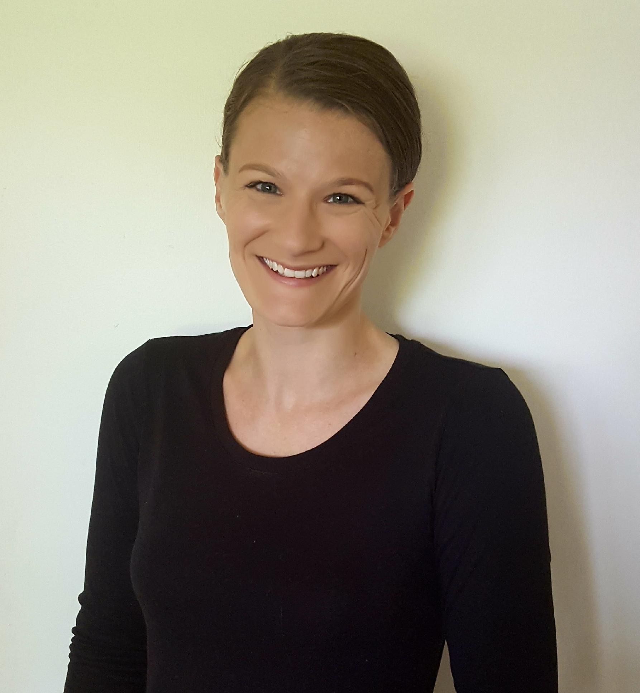

Arielle Carr

Bio
I am an assistant professor at Lafayette College in the
Mathematics Department.
My research focus is in the fields of applied linear algebra, applied numerical analysis,
and scientific computing. I earned my PhD in math from Virginia Tech in 2021, a BS (2012)
and MS (2015) in math with a minor in computer science from VT, and a BA (2008) in sociology
with a minor in education from Roanoke College. I am an expert in iterative methods for solving
large linear systems and eigenproblems. In particular, I work with Krylov subspace methods and
preconditioning techniques to develop novel and innovative algorithms that achieve efficient
and accurate solutions to important problems in a wide range of fields
in science and engineering. Recently, I have extended this to applications arising in emerging
and novel technologies such as quantum computing and machine learning. I am also an experienced
educator with over ten years teaching undergraduate and graduate courses in mathematics and
computer science. Having previously taught middle and high school mathematics, I retain a deep
understanding and appreciation for cultivating strong foundational skills in STEM fields and
incorporate pedagogical approaches in my collegiate classrooms that build on techniques learned
when teaching at the secondary level. I have a strong passion for promoting the success of
underrepresented people in different fields, particularly for women in traditionally male fields
such as applied mathematics. I dedicate my professional service to efforts that
directly address this lack of representation, drawing on my experience studying and
researching gender roles in the workplace in my undergraduate studies.
Recent News and Announcements
For links to papers mentioned in news, please see my Papers page, or visit my Google Scholar page.
-
SIAM members: As part of my Science Policy Fellowship project, I am researching gender perceptions of scholarly funding. Please consider completing my short survey, whose results will hopefully allow me to provide meaningful feedback to SIAM about how to strengthen existing efforts to ensure fairness in funding. Find more information and a link to the survey here.
-
Arielle Carr is running for secretary of the SIAM Activity Group for Equity, Diversity, and Inclusion. If you are a member of SIAG EDI, please consider voting for her. You can read her candidate bio and statement at the link sent to you by SIAM. Feel free to reach out with any questions and be sure to cast your vote for the different positions by December 21! (November 2025)
-
SIAM members: Keep an eye out for a survey on gender equity in funding. Announcements will be made through several SIAG groups, and the link will also be provided on this page. This is joint work with Kallie Pearl (Lehigh, CSE). (October 2025)
-
Arielle Carr is on leave for the Fall 2025 semester. You may contact her via email, but please expect delays in her response time. She will return to full-time activities at the end of January 2026. (September 2025)
-
Congratulations to Tamás Terlaky (Lehigh) and co-PIs Luis Zuluaga (Lehigh), David Bernal Neira (Purdue), Giacomo Nannicini (USC), and Arielle Carr on their $550K grant from the National Science Foundation (NSF), titled "Hybrid Quantum Algorithms for Structured Optimization Problems in Process Systems Engineering". (July 2025)
-
Carr accepts position as assistant professor with the Mathematics Department at Lafayette College. Go Pards! (July 2025)
-
Check out a preprint of "DEF: Diffusion-augmented Ensemble Forecasting", with lead author David Millard (RIT), and co-authored by Carr, Stéphane Gaudreault (ECCC), and Ali Baheri (RIT). (June 2025)
-
Check out a preprint of "PEARL: Preconditioner Enhancement through Actor-critic Reinforcement Learning", with lead author David Millard (RIT), and co-authored by Carr, Stéphane Gaudreault (ECCC), and Ali Baheri (RIT). (March 2025)
Call for Undergraduate Researchers
- Undergraduate students, are you looking for research opportunities? Research affords you the opportunity to learn outside of the constraints of a course, or textbook, or homework assignment. It provides you with valuable experience that ultimately supports a wide range of careers in both academia and industry. For those of you with ambition to pursue graduate study, undergradaute reserach allows you to experience the rigors -- and joys -- of academic research, while also augmenting your dossier meaningfully and competitively when applying to schools. I have openings every semester for undergraduate research. In all cases, credit can be offered for work completed. In exceptional cases, students may earn a competitive stipend. Please navigate to my Research page for a description of current projects, and my Papers page for a list of current and past students' projects. If you are interested in working with me, reach out as soon as possible to ensure full consideration for a spot for the semester. I do not currently have any active openings for the Fall 2025 semester while I am on leave, but I will to begin recruiting students in the Spring 2026 semester to start projects as early as Fall 2026.
Contact Information
- carra AT lafayette DOT edu
- Pardee Hall P210
- Easton, PA 18042
- Office phone: 610-330-5272